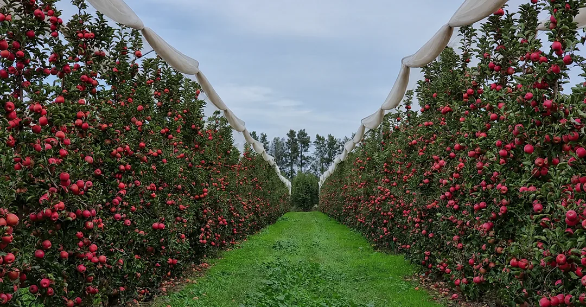
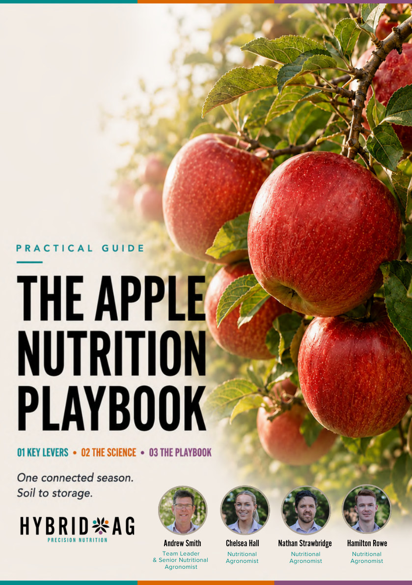

The Apple Nutrition Program.
Explore the representative Pink Lady program from the Apple Nutrition Playbook. It shows how applications and testing are arranged through the season, as a starting point for a prescription suited to your block.
The block comes before the product list.
A sample can help explain the approach, but it cannot account for the conditions in every orchard.
Your variety and rootstock, crop load, soil and water results, previous applications and budget inform the prescription. The team reviews those details with you before confirming products, rates and timing.
The booklet’s program, stage by stage.
Transcribed from pages 46–47 of the Apple Playbook. This website version is a review draft, not approved application guidance for your block.
Sample rates are shown in L/ha. Months reproduce this Pink Lady example, not fixed timing for all orchards. Blank cells are not advice to omit an application or test. DSA means Differential Sap Analysis.
Product selections, current directions and compatibility require technical confirmation before use. Products shown at the same stage are not necessarily a tank mix. The booklet’s Nutri-Core Soil Activator and Agri-Vive RF references remain flagged for identity confirmation.
Compare with the original booklet table
Use the results in context.
The playbook follows soil, water and plant results through to fruit quality. A result becomes more useful when the team understands the block it came from.
- The block
- Variety and rootstock, crop load, growth stage and the issue you want to understand.
- The history
- Previous applications and test results, with harvest, storage and pack-out information where available.
- The next decision
- What the evidence supports now, and whether another sample or field assessment is needed before changing the prescription.
The Apple Nutrition Playbook.
The sample table is one part of the booklet. The wider chapters explain the orchard conditions and seasonal decisions behind it, from crop load and water through to fruit condition and storage.
56 pages · PDF · 25.8 MB.
Review draft: visitors will provide their contact details to receive this booklet when the website launches. Downloads remain open here while the website is being reviewed.
Read about apple nutrition
Bring the sample back to your orchard.
Tell us about the block, what you want to understand and any results you already have.